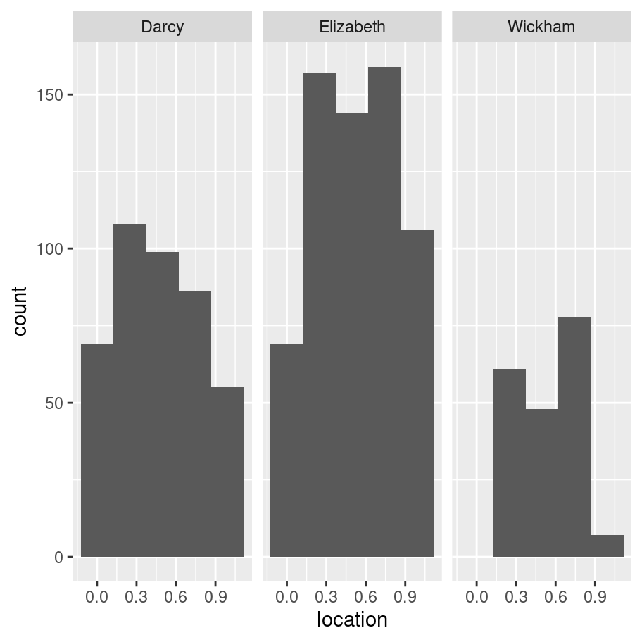

Sometimes your data set is quite text heavy. This can be for a lot of different reasons. Maybe the raw data are actually taken from text sources (e.g., newspaper articles), or maybe your data set contains a lot of free responses to survey questions. Or maybe you just need to reorganise some of the text used to describe nominal scale variables. Regardless of what the reason is, you’ll probably want to know a little bit about how to handle text in R. A few minor examples of this have appeared earlier in these notes (e.g., using nchar() to calculate the number of characters in a string). When I wrote Learning Statistics with R I included some notes on how to work with text using base R, but overall I’ve come to the view that the tidyverse approach provided via the stringr package is a little more coherent and less problematic for new users, so I’ll take that approach here.
printcatThe data come from Experiment 1 in a very cool paper by Simon Kirby, Hannah Cornish, and Kenny Smith.
chains <- read_csv("./data/kirbyetal2008_exp1_wide.csv")
chain_3 <- chains %>%
filter(version == "chain3") %>%
select(color,shape,motion,starts_with("name"))
print(chain_3)## # A tibble: 27 x 14
## color shape motion name_0 name_1 name_2 name_3 name_4 name_5
## <chr> <chr> <chr> <chr> <chr> <chr> <chr> <chr> <chr>
## 1 black circle bounce kinim… kimei hepini tuge tupim tupim
## 2 blue circle bounce wikuki miwn miniku tupim tupim tupim
## 3 red circle bounce kikumi mihen… hepini tupim tupim tupim
## 4 black square bounce miwin… pemini nige miniku mihunu mihunu
## 5 blue square bounce pinipi kupini tuge tuge tupim tupim
## 6 red square bounce kihem… pon mihenu mihunu miniku tupim
## 7 black trian… bounce miwimi poi poi poi poi miniku
## 8 blue trian… bounce nipi mhip mpo tuge miniku tupim
## 9 red trian… bounce wige kuwpi tupim miniku miniku miniku
## 10 black circle horiz… nihepi mip nige tuge tuge tuge
## # … with 17 more rows, and 5 more variables: name_6 <chr>,
## # name_7 <chr>, name_8 <chr>, name_9 <chr>, name_10 <chr>input <- chain_3$name_0
output <- chain_3$name_10Excellent! I have a data set ✅ Next, I’ll need a string manipulation package. stringr is loaded automatically with tidyverse so that’s another ✅. Time to get started!
Our first job might be just to visually inspect the words that appear in the output of the iterated learning chain, and compare them to the words that were present in the input. To make things easier on ourselves, we’ll use the str_flatten() function to flatten each of these vectors to a single string. We’ll specify collapse = ", " so that the output takes the form of a nice comma-separated list of words
input %>% str_flatten(collapse = ", ")## [1] "kinimapi, wikuki, kikumi, miwiniku, pinipi, kihemiwi, miwimi, nipi, wige, nihepi, wigemi, mahekuki, wimaku, miniki, gepinini, wikima, nipikuge, hema, pikuhemi, kimaki, pimikihe, gepihemi, kunige, miki, mihe, winige, kinimage"output %>% str_flatten(collapse = ", ")## [1] "miniku, miniku, miniku, tupim, tupim, tupim, tupin, tupin, tupin, tuge, tuge, tuge, tuge, tuge, tuge, tuge, tuge, tuge, poi, poi, poi, poi, poi, poi, poi, poi, poi"The one of the first things I notice when looking at this output is that they’re rather different in length. Even though there are 27 words in each list, it looks like the output words are shorter. We can check this by using the str_length() function to compute the length of each word.
input %>% str_length() ## [1] 8 6 6 8 6 8 6 4 4 6 6 8 6 6 8 6 8 4 8 6 8 8 6 4 4 6 8output %>% str_length()## [1] 6 6 6 5 5 5 5 5 5 4 4 4 4 4 4 4 4 4 3 3 3 3 3 3 3 3 3One thing I might be interested in, either for theoretical reasons (e.g., looking for meaningful prefixes) or practical ones (e.g., convenient plot labels) is extract a smaller subset of the string. A common example is to take the first three characters. We can do this using str_sub()
output %>% str_sub(start = 1, end = 3)## [1] "min" "min" "min" "tup" "tup" "tup" "tup" "tup" "tup" "tug"
## [11] "tug" "tug" "tug" "tug" "tug" "tug" "tug" "tug" "poi" "poi"
## [21] "poi" "poi" "poi" "poi" "poi" "poi" "poi"A feature of str_sub that sometimes comes in handy is that you can specify negative values here to refer to the distance from the end of the string. If for instance I wanted to extract the last three characters in every word:
output %>% str_sub(start = -3, end = -1)## [1] "iku" "iku" "iku" "pim" "pim" "pim" "pin" "pin" "pin" "uge"
## [11] "uge" "uge" "uge" "uge" "uge" "uge" "uge" "uge" "poi" "poi"
## [21] "poi" "poi" "poi" "poi" "poi" "poi" "poi"I’m not sure why I would want it in this context, but we can duplicate strings using str_dup()
output %>% str_dup(times = 3)## [1] "minikuminikuminiku" "minikuminikuminiku"
## [3] "minikuminikuminiku" "tupimtupimtupim"
## [5] "tupimtupimtupim" "tupimtupimtupim"
## [7] "tupintupintupin" "tupintupintupin"
## [9] "tupintupintupin" "tugetugetuge"
## [11] "tugetugetuge" "tugetugetuge"
## [13] "tugetugetuge" "tugetugetuge"
## [15] "tugetugetuge" "tugetugetuge"
## [17] "tugetugetuge" "tugetugetuge"
## [19] "poipoipoi" "poipoipoi"
## [21] "poipoipoi" "poipoipoi"
## [23] "poipoipoi" "poipoipoi"
## [25] "poipoipoi" "poipoipoi"
## [27] "poipoipoi"Sometimes it is useful to ensure that every string has the same length. Again, this can be quite useful when labelling data. For longer strings we might need to truncate it using str_trunc() and for shorter strings we might need to pad it with whitespace (or other characters) using str_pad(). To give a sense of this:
str_pad(string = "Danielle", width = 20)
str_pad(string = "Danielle", width = 20, side = "right")
str_pad(string = "Danielle", width = 20, side = "both")
str_pad(string = "Danielle", width = 20, side = "both", pad = "-")## [1] " Danielle"
## [1] "Danielle "
## [1] " Danielle "
## [1] "------Danielle------"str_trunc(string = "Danielle", width = 9)
str_trunc(string = "Danielle", width = 8)
str_trunc(string = "Danielle", width = 7)
str_trunc(string = "Danielle", width = 7, ellipsis = "+++")## [1] "Danielle"
## [1] "Danielle"
## [1] "Dani..."
## [1] "Dani+++"Truncation and padding work very nicely together:
input %>%
str_pad(width = 7, side = "right") %>%
str_trunc(width = 7)## [1] "kini..." "wikuki " "kikumi " "miwi..." "pinipi " "kihe..."
## [7] "miwimi " "nipi " "wige " "nihepi " "wigemi " "mahe..."
## [13] "wimaku " "miniki " "gepi..." "wikima " "nipi..." "hema "
## [19] "piku..." "kimaki " "pimi..." "gepi..." "kunige " "miki "
## [25] "mihe " "winige " "kini..."A common problem when dealing with text is white space that appears in the wrong place. For example, suppose someone intended to type the words tupim, tupin and poi as part of the experiment but ended up with additional spaces, leading to this as the raw data:
raw <- " tupim tupin poi "The str_trim() function removes all leading and trailing whitespace; str_squish() does the same but also compresses any internal whitespace to a single character. Thus:
raw
raw %>% str_trim()
raw %>% str_squish()## [1] " tupim tupin poi "
## [1] "tupim tupin poi"
## [1] "tupim tupin poi"input %>%
str_flatten(", ") %>%
str_wrap(width = 30, indent = 5, exdent = 3) %>%
cat()## kinimapi, wikuki, kikumi,
## miwiniku, pinipi, kihemiwi,
## miwimi, nipi, wige, nihepi,
## wigemi, mahekuki, wimaku,
## miniki, gepinini, wikima,
## nipikuge, hema, pikuhemi,
## kimaki, pimikihe, gepihemi,
## kunige, miki, mihe, winige,
## kinimageThere are a collection of functions that manipulate properties of text that vary from one language to the next. The order in which letters appear in the alphabet isn’t always the same, for example. These functions all have a locale value that is set to "en" by default.
letters %>% str_sort(locale = "en") %>% str_flatten()
letters %>% str_sort(locale = "haw") %>% str_flatten()## [1] "abcdefghijklmnopqrstuvwxyz"
## [1] "aeioubcdfghjklmnpqrstvwxyz"There is also a str_order() function that returns a numeric vector indicating the order in which the original input should be shuffled to produce a sorted output.
For dealing with upper and lower case:
"DANIELLE navarro" %>% str_to_lower()
"DANIELLE navarro" %>% str_to_upper()
"DANIELLE navarro" %>% str_to_title()## [1] "danielle navarro"
## [1] "DANIELLE NAVARRO"
## [1] "Danielle Navarro"Note that these are also locale sensitive: the precise mappings that determine what counts as upper and lower case aren’t the same in different languages.
Many text processing tasks require us to solve pattern matching problems. This might be something simple like finding every instance of the word "hello" or something more complicated like extracting every email address from a messy web page. The approach taken in stringr is to make a conceptual distinction between functions that allow you to perform tasks, and functions that specify pattern matching engines.
There are many different tasks that you can solve using pattern matching methods and as a result there are many different pattern matching functions. This isn’t a complete listing of the functions in stringr that you can use for this, but it covers most of the main ones:
str_split breaks a string by a separating characterstr_count counts the number of times a string matches a patternstr_detect and str_subset finds strings that match a patternstr_locate finds the position of the first pattern match in a stringstr_locate_all finds the positions of all matchesstr_extract returns the first match in a string (see also str_match)str_extract_all returns all matches in a string (see also str_match_all)str_remove deletes the first part of a string that matches a patternstr_remove_all deletes all parts of a string that match a patternstr_replace and str_replace_all allow you to make substitutionsI’ll go into a little more detail on these shortly.
The thing I really like, though, is the fact that the engine that defines what counts as a pattern is broken up into convenience functions:
fixed pattern is the simplest type: it matches an exact patterncoll pattern is similar, but recognises that the same character can be represented in different ways (especially useful if you’re using non-English characters)boundary pattern can match the breaks between words, lines, characters, or sentences. By convention "" is used as shorthand for boundary("character")regex (the default throughout stringr) is a regular expressionI’ll start out giving an example that uses boundary, but for the most part I’ll use fixed expressions. I’ll leave regular expressions for the very end - they’re easily the most powerful tool but also the most complicated.
To give a sense of how we might want to use str_split() to break up strings, let suppose I want to take the start of Pride and Prejudice and split it up by word, character, or sentence. First, I’ll need to define it:
truth <- "It is a truth universally acknowledged, that a single man in possession of a good fortune, must be in want of a wife. However little known the feelings or views of such a man may be on his first entering a neighbourhood, this truth is so well fixed in the minds of the surrounding families, that he is considered the rightful property of some one or other of their daughters."Now, if I want to break this up, the task I need to solve is governed by the str_split() function, but the three goals I’ve set myself all relate to a boundary() pattern of some kind, so that’s the engine I’ll use. So the commands I need here would be:
truth %>% str_split(pattern = boundary("word"))
truth %>% str_split(pattern = boundary("character"))
truth %>% str_split(pattern = boundary("sentence"))## [[1]]
## [1] "It" "is" "a"
## [4] "truth" "universally" "acknowledged"
## [7] "that" "a" "single"
## [10] "man" "in" "possession"
## [13] "of" "a" "good"
## [16] "fortune" "must" "be"
## [19] "in" "want" "of"
## [22] "a" "wife" "However"
## [25] "little" "known" "the"
## [28] "feelings" "or" "views"
## [31] "of" "such" "a"
## [34] "man" "may" "be"
## [37] "on" "his" "first"
## [40] "entering" "a" "neighbourhood"
## [43] "this" "truth" "is"
## [46] "so" "well" "fixed"
## [49] "in" "the" "minds"
## [52] "of" "the" "surrounding"
## [55] "families" "that" "he"
## [58] "is" "considered" "the"
## [61] "rightful" "property" "of"
## [64] "some" "one" "or"
## [67] "other" "of" "their"
## [70] "daughters"
##
## [[1]]
## [1] "I" "t" " " "i" "s" " " "a" " " "t" "r" "u" "t" "h" " "
## [15] "u" "n" "i" "v" "e" "r" "s" "a" "l" "l" "y" " " "a" "c"
## [29] "k" "n" "o" "w" "l" "e" "d" "g" "e" "d" "," " " "t" "h"
## [43] "a" "t" " " "a" " " "s" "i" "n" "g" "l" "e" " " "m" "a"
## [57] "n" " " "i" "n" " " "p" "o" "s" "s" "e" "s" "s" "i" "o"
## [71] "n" " " "o" "f" " " "a" " " "g" "o" "o" "d" " " "f" "o"
## [85] "r" "t" "u" "n" "e" "," " " "m" "u" "s" "t" " " "b" "e"
## [99] " " "i" "n" " " "w" "a" "n" "t" " " "o" "f" " " "a" " "
## [113] "w" "i" "f" "e" "." " " "H" "o" "w" "e" "v" "e" "r" " "
## [127] "l" "i" "t" "t" "l" "e" " " "k" "n" "o" "w" "n" " " "t"
## [141] "h" "e" " " "f" "e" "e" "l" "i" "n" "g" "s" " " "o" "r"
## [155] " " "v" "i" "e" "w" "s" " " "o" "f" " " "s" "u" "c" "h"
## [169] " " "a" " " "m" "a" "n" " " "m" "a" "y" " " "b" "e" " "
## [183] "o" "n" " " "h" "i" "s" " " "f" "i" "r" "s" "t" " " "e"
## [197] "n" "t" "e" "r" "i" "n" "g" " " "a" " " "n" "e" "i" "g"
## [211] "h" "b" "o" "u" "r" "h" "o" "o" "d" "," " " "t" "h" "i"
## [225] "s" " " "t" "r" "u" "t" "h" " " "i" "s" " " "s" "o" " "
## [239] "w" "e" "l" "l" " " "f" "i" "x" "e" "d" " " "i" "n" " "
## [253] "t" "h" "e" " " "m" "i" "n" "d" "s" " " "o" "f" " " "t"
## [267] "h" "e" " " "s" "u" "r" "r" "o" "u" "n" "d" "i" "n" "g"
## [281] " " "f" "a" "m" "i" "l" "i" "e" "s" "," " " "t" "h" "a"
## [295] "t" " " "h" "e" " " "i" "s" " " "c" "o" "n" "s" "i" "d"
## [309] "e" "r" "e" "d" " " "t" "h" "e" " " "r" "i" "g" "h" "t"
## [323] "f" "u" "l" " " "p" "r" "o" "p" "e" "r" "t" "y" " " "o"
## [337] "f" " " "s" "o" "m" "e" " " "o" "n" "e" " " "o" "r" " "
## [351] "o" "t" "h" "e" "r" " " "o" "f" " " "t" "h" "e" "i" "r"
## [365] " " "d" "a" "u" "g" "h" "t" "e" "r" "s" "."
##
## [[1]]
## [1] "It is a truth universally acknowledged, that a single man in possession of a good fortune, must be in want of a wife. "
## [2] "However little known the feelings or views of such a man may be on his first entering a neighbourhood, this truth is so well fixed in the minds of the surrounding families, that he is considered the rightful property of some one or other of their daughters."Suppose I would like to look at the presence of the string "ni" within each of the input words. It’s a specific piece of text, so we’ll use fixed("ni") to specify the pattern. There are a few different tasks we might want to complete. We could count the number of times "ni" appears in every word (a job for str_count), we could ask whether the string "ni" appears in each word (a job for str_detect), or we could ask which of the words contain "ni". That leads to the following commands:
input %>% str_count(pattern = fixed("ni"))## [1] 1 0 0 1 1 0 0 1 0 1 0 0 0 1 2 0 1 0 0 0 0 0 1 0 0 1 1input %>% str_detect(pattern = fixed("ni"))## [1] TRUE FALSE FALSE TRUE TRUE FALSE FALSE TRUE FALSE TRUE
## [11] FALSE FALSE FALSE TRUE TRUE FALSE TRUE FALSE FALSE FALSE
## [21] FALSE FALSE TRUE FALSE FALSE TRUE TRUEinput %>% str_subset(pattern = fixed("ni"))## [1] "kinimapi" "miwiniku" "pinipi" "nipi" "nihepi"
## [6] "miniki" "gepinini" "nipikuge" "kunige" "winige"
## [11] "kinimage""gepinini" %>% str_locate(fixed("ni"))## start end
## [1,] 5 6"gepinini" %>% str_locate_all(fixed("ni"))## [[1]]
## start end
## [1,] 5 6
## [2,] 7 8The last group of pattern matching functions I want talk about are those that extract, remove or replace parts of strings that match a pattern. To get the most out of these functions, it’s useful to switch to regular expressions to define patterns. Regular expressions are complicated things and I won’t even try to do anything but the most basic tasks with the. To start with, consider this:
vowels <- regex("[aeiouAEIOU]")Setting aside the details of how it works, you might guess that this is an expression that matches vowels. So if we take the opening passage to Pride and Prejudice and do this
truth %>% str_remove_all(pattern = vowels) ## [1] "t s trth nvrslly cknwldgd, tht sngl mn n pssssn f gd frtn, mst b n wnt f wf. Hwvr lttl knwn th flngs r vws f sch mn my b n hs frst ntrng nghbrhd, ths trth s s wll fxd n th mnds f th srrndng fmls, tht h s cnsdrd th rghtfl prprty f sm n r thr f thr dghtrs."we end up with output that removes all the vowels. Alternatively, we could replace all the vowels with periods using this command
truth %>% str_replace_all(pattern = vowels, replacement = fixed(".")) ## [1] ".t .s . tr.th .n.v.rs.lly .ckn.wl.dg.d, th.t . s.ngl. m.n .n p.ss.ss..n .f . g..d f.rt.n., m.st b. .n w.nt .f . w.f.. H.w.v.r l.ttl. kn.wn th. f..l.ngs .r v..ws .f s.ch . m.n m.y b. .n h.s f.rst .nt.r.ng . n..ghb..rh..d, th.s tr.th .s s. w.ll f.x.d .n th. m.nds .f th. s.rr..nd.ng f.m.l..s, th.t h. .s c.ns.d.r.d th. r.ghtf.l pr.p.rty .f s.m. .n. .r .th.r .f th..r d..ght.rs."Finally, we could use a command like this to extract all the vowels from truth:
truth %>% str_extract_all(pattern = vowels) ## [[1]]
## [1] "I" "i" "a" "u" "u" "i" "e" "a" "a" "o" "e" "e" "a" "a"
## [15] "i" "e" "a" "i" "o" "e" "i" "o" "o" "a" "o" "o" "o" "u"
## [29] "e" "u" "e" "i" "a" "o" "a" "i" "e" "o" "e" "e" "i" "e"
## [43] "o" "e" "e" "e" "i" "o" "i" "e" "o" "u" "a" "a" "a" "e"
## [57] "o" "i" "i" "e" "e" "i" "a" "e" "i" "o" "u" "o" "o" "i"
## [71] "u" "i" "o" "e" "i" "e" "i" "e" "i" "o" "e" "u" "o" "u"
## [85] "i" "a" "i" "i" "e" "a" "e" "i" "o" "i" "e" "e" "e" "i"
## [99] "u" "o" "e" "o" "o" "e" "o" "e" "o" "o" "e" "o" "e" "i"
## [113] "a" "u" "e"Okay, so now I should be able to do neat things with the whole novel. Let’s start by gluing the pp vector into one long string, since the line breaks don’t seem to appear at any interesting locations
pp <- janeaustenr::prideprejudice %>%
str_flatten(" ") %>%
str_squishOkay, so now I want to give myself something to do with this. I’m tired and sick and I can’t think of anything clever, so I’ll just try and locate every appearance of the words "Elizabeth", "Darcy" and "Wickham" in the text:
characters <- regex("Elizabeth|Darcy|Wickham")
x <- pp %>% str_extract_all(characters)
y <- pp %>% str_locate_all(characters)
df <- tibble(character = x[[1]], location = y[[1]][,1] / str_length(pp))
df %>% ggplot(aes(x = location)) +
facet_wrap(~ character) +
geom_histogram(bins = 5)
No surprises there: Elizabeth occurs most frequently, and at the most uniform rate. At the start of the book Darcy appears just as often, but then there are sections of the book that don’t concern him and the function flatlines for a while. Wickham is absent more often than not.